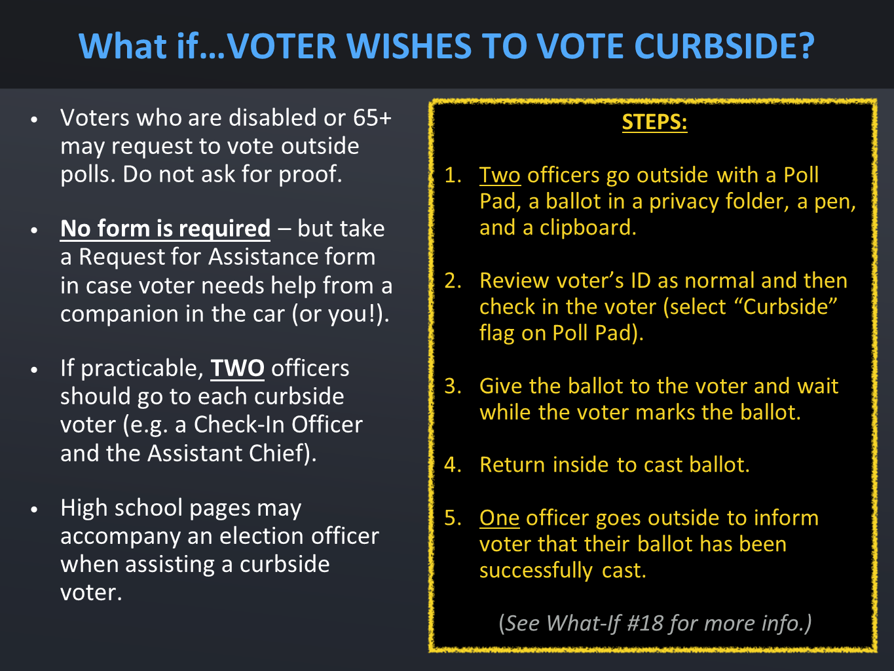

What if Voter Wishes to Vote Curbside?
Some voters may choose to vote curbside. They would pull into a designated curbside voter parking spot and call the phone number you have put on the curbside voting sign.
- Voters who are disabled or age 65 or older may request to vote outside the polls. You should not ask for additional proof if someone asks to vote curbside.
- The Request for Assistance form is NOT required for curbside voters. However, you may want to take this form with you when helping curbside voters in case they have someone in their vehicle who will be assisting them. They may also request help from you!
- In November elections, you may have high school pages assigned to your precinct. They may accompany you, but they may not directly help curbside voters.
How do you process a curbside voter?
- TWO officers, when practicable, go outside with a Poll Pad, a ballot in a privacy folder, and a pen to mark the ballot.
- Check in the voter using the Poll Pad, issue the ballot to the voter, and wait while the voter marks the ballot.
- Both officers should return inside to cast the ballot.
- One officer or page goes back outside to inform voter their ballot has been successfully cast. (If the DS200 scanner did not accept the ballot, you would spoil the ballot and issue the voter a new ballot.)
Remember that you must always wait with the voter until they finish marking their ballot. If you do not stay, the voter could leave or give their ballot to an outside campaigner – don’t let that happen!